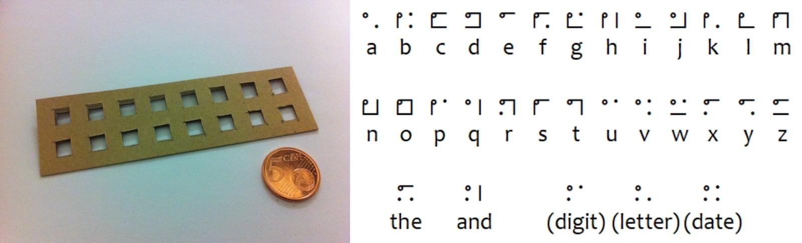
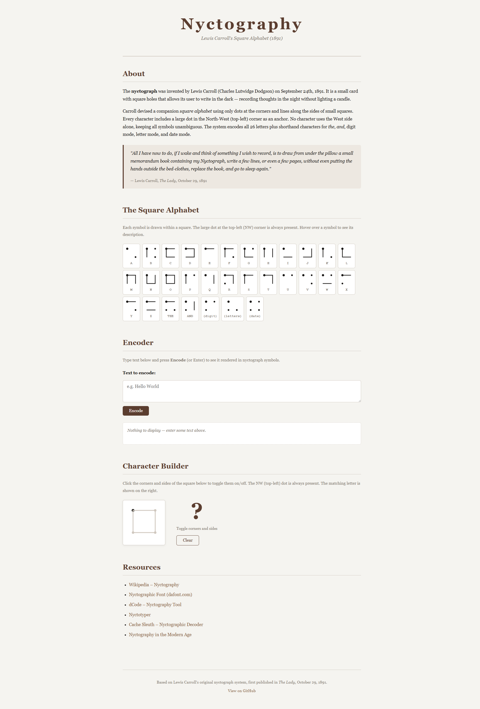

To continue my journey of numerals and alphabets like Kaktovik Numerals and Cistercian Numerals I kept a note of others to work on later, I've finally gotten round to producing a site for this too.
Nyctography is a form of substitution cipher writing created by Lewis Carroll (Charles Lutwidge Dodgson) in 1891.

Back to my tool of the month GitHub Copilot assigning it to the following issue #1.
It produced a very clean site with 3 main parts:
- The Square Alphabet
- Encoder
- Character Builder
